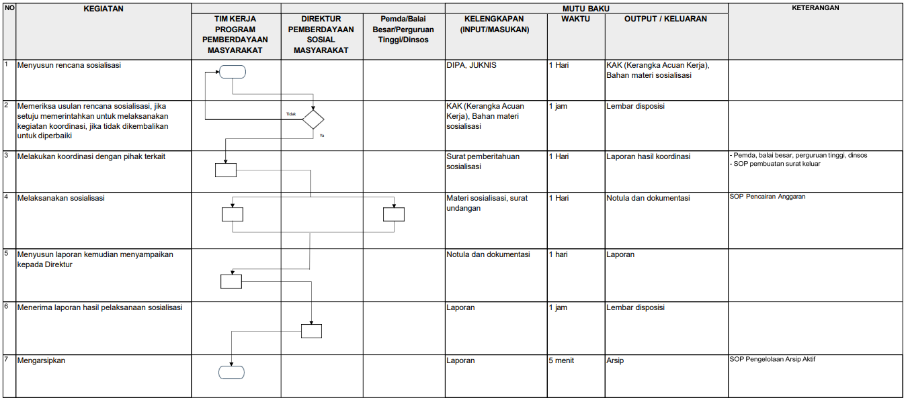

Sosialisasi Program Pemberdayaan Masyarakat
Menyiapkan, melaksanakan, dan melaporkan sosialisasi program kepada pemerintah daerah, balai besar, perguruan tinggi, dan dinas sosial.
Deskripsi SOP
SOP Sosialisasi Program Pemberdayaan Masyarakat menjadi tahap pertama dalam siklus program. Tujuannya menyampaikan informasi program kepada pemerintah daerah, balai besar, perguruan tinggi, dan dinas sosial, sehingga program dipahami dan didukung pelaksanaannya.
Tim Kerja menyusun rencana sosialisasi dan Kerangka Acuan Kerja (KAK), lalu Direktur Pemberdayaan Sosial Masyarakat memeriksanya. Jika disetujui, Tim Kerja berkoordinasi dengan pihak terkait dan melaksanakan sosialisasi bersama mereka. Hasilnya dituangkan dalam notula, dokumentasi, dan laporan kepada Direktur, kemudian diarsipkan.
Pihak yang terlibat
- Tim Kerja Program Pemberdayaan Masyarakat
- Direktur Pemberdayaan Sosial Masyarakat
- Pemda / Balai Besar / Perguruan Tinggi / Dinsos
Kualifikasi pelaksana
- Memahami program pemberdayaan masyarakat
- Memiliki kemampuan komunikasi publik
- Memahami kebijakan dan petunjuk teknis pemberdayaan masyarakat
- Mampu melakukan koordinasi
Terkait dengan SOP
- SOP Pembuatan Surat Keluar
- SOP Pencairan Anggaran
- SOP Penanganan Arsip Aktif
Flowchart

Tahapan kegiatan
Menyusun rencana sosialisasi
Tim Kerja
DIPA, JUKNIS
1 hari
KAK (Kerangka Acuan Kerja), bahan materi sosialisasi
Memeriksa usulan rencana sosialisasi
Direktur Pemberdayaan Sosial Masyarakat
KAK, bahan materi sosialisasi
1 jam
Lembar disposisi
Jika setuju, memerintahkan kegiatan koordinasi. Jika tidak, dikembalikan untuk diperbaiki.
Melakukan koordinasi dengan pihak terkait
Tim Kerja
Surat pemberitahuan sosialisasi
1 hari
Laporan hasil koordinasi
Pihak terkait: Pemda, balai besar, perguruan tinggi, dinsos. Lihat SOP Pembuatan Surat Keluar.
Melaksanakan sosialisasi
Tim Kerja bersama Pemda / Balai Besar / Perguruan Tinggi / Dinsos
Materi sosialisasi, surat undangan
1 hari
Notula dan dokumentasi
Lihat SOP Pencairan Anggaran.
Menyusun laporan, lalu menyampaikannya kepada Direktur
Tim Kerja
Notula dan dokumentasi
1 hari
Laporan
Menerima laporan hasil pelaksanaan sosialisasi
Direktur Pemberdayaan Sosial Masyarakat
Laporan
1 jam
Lembar disposisi
Mengarsipkan
Tim Kerja
Laporan
5 menit
Arsip
Lihat SOP Pengelolaan Arsip Aktif.